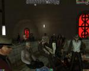
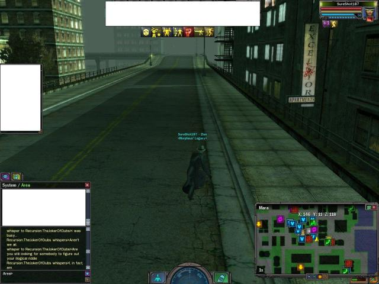

Browse Logs | Search Logs | Image Dump | Updates | FAQ | Logging Tips | Links / Contact | Submit Your Logs
Date: 22/04/08 Views: 93

Date: 23/04/08 Views: 103
This screenshot is related to this log here.
